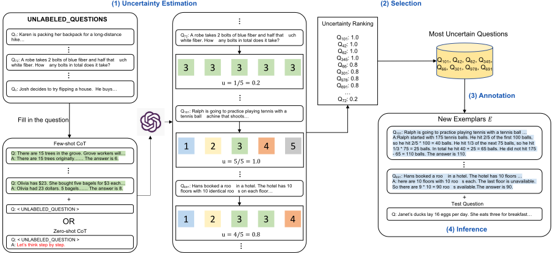
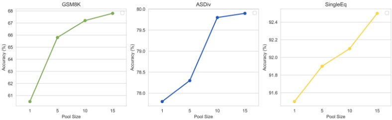
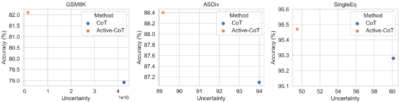

基于思维链的大语言模型主动提示方法
CoT 提示的效果高度依赖人工挑选并标注的 few-shot 示例，但固定示例集对不同任务未必最优，难以判断哪些问题值得投入标注。Active-Prompt 借鉴不确定性主动学习思想：先让 LLM 对候选问题池中每个问题回答 k 次，用 disagreement/entropy 等指标挑出最不确定的 n 个问题，交由人工标注 CoT 推理链，再以新示例做 few-shot CoT 加 self-consistency 推理。在 8 个算术/常识/符号推理数据集上，平均比 self-consistency 提升 7.0%（text-davinci-002）与 1.8%（code-davinci-002），显著优于 Random-CoT、Auto-CoT 与 Complex-CoT；选出的示例可跨模型迁移，k=10、候选池 1000 条即收敛。对团队而言，这是一套低成本构建任务专属提示示例资产、并用不确定性信号定位难例的实用方法。
CoT 提示依赖人工挑选并标注的固定 few-shot 示例，但推理任务在难度、范围、领域上差异很大，固定示例对不同任务未必有效；核心问题是：如何从任务相关问题池中判断哪些问题最值得投入人工标注。
四阶段流程：(1) 不确定性估计——用少量初始示例（或 zero-shot 的 "Let's think step by step."）让 LLM 对候选池每个问题回答 k 次，用 disagreement（去重后唯一答案数/k）、entropy、variance（数值题按题中数字归一化）或 self-confidence 度量不确定性；(2) 选择——取不确定性最高的 n 个问题；(3) 标注——人工为选中问题撰写推理链与答案，构成新示例集 E；(4) 推理——将 E 前置到每个测试问题做 few-shot CoT，并配合 self-consistency（温度 0.7、每题推理 40 次取最一致答案）。
在 8 个基准数据集上，Active-Prompt (D) 相比 self-consistency 平均提升 7.0%（text-davinci-002）和 1.8%（code-davinci-002）
算术推理任务上相比 self-consistency 平均提升 2.1%（code-davinci-002）、7.2%（text-davinci-002）；code-davinci-002 上最大提升出现在 GSM8K（4.2%）与 AQuA（3.1%）
GSM8K 上 Random-CoT 为 78.6，仅略高于 SC 的 78.0，而 Active-Prompt 达 82.2（高出 3.6%），证明收益来自主动选择策略而非标注流程本身
在相同设置下 Active-Prompt 大幅超过 Auto-CoT（GSM8K/MultiArith/AddSub，code-davinci-002，无 self-consistency），也超过 Complex-CoT（gpt-3.5-turbo）
预测次数 k 增大性能持续提升并在 k≈10 收敛；候选池 1000 条即可获得稳健性能，继续增大收益收敛
Zero-Shot-Active-Prompt（用 "Let's think step by step." 替代初始 few-shot 示例）与完整方法性能相当，说明方法不依赖初始人工示例
不确定性与准确率呈高度负相关：不确定性越低准确率越高
示例可跨模型迁移：用一个模型选题、另一个模型推理仍有效，且大模型选题+小模型推理效果更好；方法在 Llama2-70b-chat 上也大幅超过 CoT
仅延长 CoT 标注长度（平均 155 词 vs 160 词）不能带来提升，某些情况还会下降，说明收益来自问题选择而非标注长度
区别于 CoT/self-consistency 等依赖固定人工示例集的工作，以及 Auto-CoT 的多样性聚类选例和 Complex-CoT 的复杂度选例，本文首次将基于不确定性的主动学习引入 CoT 提示的示例选择：用模型多次预测的 disagreement/entropy 定位最有标注价值的问题，再以最小人工投入标注，形成任务专属示例集，并验证了所选示例的跨模型迁移性；论文指出多样性与不确定性互补，组合二者留作未来方向。
相关度级别：high
命中能力域：3.2 提示工程 | 3.5 评测与可靠使用
理由：直接命中 3.2 提示工程：论文核心是 CoT 提示示例的自动选择与优化（自动提示优化）、in-context learning 与思维链推理，正是团队'把模型用好'的核心技术栈；同时与 3.5 部分相关——论文含成本-效率分析（Appendix H）与'模型初筛+人工标注'的人机协作流程，且不确定性指标可作为可靠性信号。对构建代码审查、测试辅助、知识库问答等 LLM 应用的团队，该方法提供了用数据驱动方式替代'凭经验挑示例'的工程化路径。
建议动作：深入精读并做内部分享
arXiv:2302.12246v5 [cs.CL] 2024年7月21日
Shizhe Diao ♠ , Pengcheng Wang ♡ , Yong Lin ♠ , Rui Pan ♠ , Xiang Liu ♣ , Tong Zhang ♦
♠ 香港科技大学
♡ 多伦多大学 ♣ 香港大学
♦ 伊利诺伊大学厄巴纳-香槟分校
{sdiaoaa, ylindf, rpan}@connect.ust.hk pcheng.wang@mail.utoronto.ca
xiang.liu@connect.hku.hk tozhang@illinois.edu
大语言模型（LLMs）规模的不断增长，为各类需要推理的复杂任务带来了涌现能力，例如算术推理和常识推理。众所周知，针对特定任务的有效提示设计对于 LLM 生成高质量答案的能力至关重要。特别是，对于复杂的问答任务，一种有效的方法是基于示例的提示结合思维链（chain-of-thought, CoT）推理，该方法能显著提升 LLM 的性能。然而，当前的 CoT 方法依赖于固定的人工标注示例集，而这些示例对于不同任务而言未必是最有效的。本文提出了一种新方法 Active-Prompt，通过任务特定的示例提示（由人工设计的 CoT 推理进行标注）使 LLM 适应不同任务。为此，我们针对一个关键问题提出了解决方案，即如何从任务特定的查询池中确定哪些问题最重要、最有帮助、值得标注。通过借鉴基于不确定性的主动学习这一相关问题的思想，我们引入了若干度量指标来刻画不确定性，从而选择最不确定的问题进行标注。实验结果证明了我们所提方法的优越性，在八个复杂推理任务上取得了更优的性能。针对不同不确定性度量、查询池规模、零样本学习以及准确率-不确定性关系的进一步分析证明了我们方法的有效性。1
大语言模型（Large Language Models, LLMs）(Raffel et al., 2020; Brown et al., 2020; Chowdhery et al., 2022; Zhang et al., 2022a; Tay et al., 2022; Scao et al., 2022; Zeng et al., 2022; Smith et al., 2022) 近年来取得了巨大成功。应用 LLM 的一种典型方式是上下文学习（in-context learning）(Brown et al., 2020)，即通过提供若干指令和示例，这种方式在常规的语言理解与生成任务上表现良好，但在复杂推理任务上表现不佳 (Rae et al., 2021; Liang et al., 2022; Wei et al., 2022a)。近期的提示研究 (Wei et al., 2022b; Wang et al., 2022; Zhou et al., 2022) 发现，在示例中详细展开推理步骤能赋予 LLM 良好的推理能力，这就是思维链（chain-of-thought, CoT）提示。然而，CoT 提示依赖于人工设计：它需要人工挑选若干信息丰富的问题，然后为其标注 CoT 和答案。人工标注的示例（带有标注 CoT 和答案的问题）对于不同任务而言未必最为有效。例如，最初的 CoT 提示 (Wei et al., 2022b) 为八个问题精心构造了示例，这些问题要么是从训练集中随机选取的，要么是由人工编写的。由于推理任务在难度、范围、领域等方面的性质存在显著差异，我们并不知道哪一类问题最值得标注。同样不清楚的是，某组特定的示例是否是引出所需信息的最佳选择。不过，好消息是，为不同任务标注八个示例是轻而易举的。这几乎不需要花费金钱和人力。鉴于此，我们将关键问题确定为：如何确定哪些问题对于标注而言最重要、最有帮助。我们针对这一问题提出了一种解决方案，即利用不确定性，并引入少量人工来标注一小组问题。这一标注预算是合理的。
1 我们的代码可在 https://github.com/shizhediao/active-prompt 获取。
通过借鉴与之相关的基于不确定性的主动学习（Gentile et al., 2022）这一问题的思想，我们引入了若干度量指标来刻画模型对每个问题的预测中的不确定性。因此，我们提出了一种新的基于不确定性的标注策略，该策略从下游数据集中选取若干问题，并由人工标注推理链，从而显著提升了性能。具体而言，给定一个数据集 D，我们首先让模型对其进行 k 次回答。然后，我们基于每个问题的 k 个回答计算该模型的不确定性 u。利用 u，我们选取 u 值最大、即最不确定的 n 个问题，并由 oracle 对这些问题进行标注，以构造新的示例 E。最后，我们遵循思维链（chain-of-thought, CoT）提示（Wei et al., 2022b）的标准做法，将 E 前置到每个测试问题之前。我们所提方法的示意图如图 1 所示。文献中存在多种不同的不确定性估计方法（Settles, 2009; Culotta and McCallum, 2005）。在我们的主要实验中，我们用所有预测答案的分歧度和熵来刻画不确定性 u。此外，我们还研究了其他不同的不确定性度量，例如方差和自信度。对于自信度，我们使用一个新的模板将生成的答案与问题重新组织在一起，然后询问模型对这一生成结果的置信程度。在这种情形下，u 被定义为一个分类变量，取值于 {非常自信、自信、不自信、错误答案}。我们观察到，分歧度、熵和方差的表现相近且都较好，而自信度则不起作用，因为大语言模型（LLMs）容易过度自信。

我们在八个数据集上开展实验，涵盖算术推理、常识推理和符号推理。实验结果表明，我们所提方法优于具有竞争力的基线模型，证明了其有效性。对不同不确定性度量、查询池规模、零样本学习以及准确率-不确定性关系的进一步分析展示了所提出的每个模块的益处，并揭示了它们的作用。我们的贡献有三方面：1) 我们提出明智地选择最有帮助且信息量最大的问题进行标注，从而减少人工工程工作量。2) 我们引入了一种有效的基于不确定性的问题选择策略，并采用了若干不同的不确定性度量。3) 我们所提方法在多个推理任务上大幅超越具有竞争力的基线模型。据我们所知，我们的工作是首个证明在 CoT 提示中进行主动问题选择对解决复杂推理任务具有益处的工作。
我们所提方法的示意图如图 1 所示。给定 l 个无标注训练数据 D tr ' t q 1 , q 2 , ..., q l u 和 m 个测试数据 D te ' t p 1 , p 2 , ..., p m u，其中每个 q 和 p 表示不含任何答案或推理步骤的问题，我们的目标是从 D tr 中仅标注 n 个问题作为少样本示例（few-shot exemplars），即通过构建一个新的示例集 E ' tp q 1 , c 1 , a 1 q , p q 2 , c 2 , a 2 q , ..., p q n , c n , a n qu，其中包含推理步骤 c 和答案 a。然后，我们使用 E 对测试数据 D te 进行提示并获得预测结果。在本节中，我们将说明如何选择 n 个最不确定的问题并对其进行标注。
为了从大型数据集中选取少量问题，我们需要一种无监督的方法。先前的研究（Gentile et al., 2022）表明，降低模型的不确定性有助于提升模型的性能。因此，我们引入大语言模型（LLM）的不确定性作为选择数据的度量指标。在思维链（chain-of-thought, CoT）设置下，我们首先对 LLM 进行 k 次前向推理，以获得每个问题的 k 个答案。然后，可以通过不同的方式来衡量一个问题的不确定性。在我们的工作中，我们考虑了四种潜在的不确定性度量指标，如下所述。
不一致性（Disagreement）：首先，我们考虑利用 k 个生成答案 A ' t a 1 , a 2 , ..., a k u 之间的不一致性来度量不确定性。不一致性是通过计算预测结果中唯一答案的数量得到的。其实现非常简单。我们首先通过集合运算去除重复项来统计唯一答案，得到 h 个唯一项 A ' t a 1 , a 2 , ..., a h u 。然后，不一致性通过 u ' h { k 计算得出。
熵（Entropy）：不确定性也可以用熵来表征，其计算方式为
其中 P θ p a j | q i q 表示某个预测答案在所有预测中所占的频率。熵越大表示系统的不确定性越大，熵越小则表示不确定性越小。因此，在复杂推理中，熵相对较大的问题将被选为候选。
方差（Variance）：我们进一步考虑将方差作为一种不确定性度量指标，我们假设它可能更适合于算术类答案。
其中 ¯ a ' 1 k ř k j ' 1 a j 。我们观察到预测答案之间存在巨大的差异。有些预测答案是小数字（例如 1），而有些则是大数字（例如 10000）。为了缓解大数字占主导的问题，我们提出利用问题中提到的所有数字对预测结果进行归一化。例如，给定问题“有 x 1 个人。每个人有 x 2 个苹果。总共有多少个苹果？”以及一个预测答案 ˆ y ，归一化后我们得到 ˆ y {p | x 1 | ` | x 2 | q 。
我们首先进行了一项初步研究，发现基于不一致性、熵和方差的度量指标均表现优异、不相上下，显著优于自置信度（self-confidence）（详细信息见第 5.1 节）。因此，在我们的实验中，我们的方法主要采用不一致性和熵，因为它们实现简单。
在得到每个问题的不确定性之后，我们可以根据每个问题的不确定性建立一个不确定性排序。然后，我们将选取不确定性最高的 top n 个问题进行标注。如果不确定性最大的问题多于 n 个，我们将从中随机选取 n 个问题。这 n 个问题将由人工标注者标注推理链（rationale chains）和答案，以构建新的示例 E ' tp q 1 , c 1 , a 1 q , ..., p q n , c n , a n qu。E 将替换初始的 ˆ E，我们将使用它进行少样本思维链提示。
在推理阶段，我们使用新标注的示例 E 对每个问题进行提示。此外，我们采用自洽性（self-consistency）(Wang et al., 2022) 方法，以温度 T 对问题进行 m 次推理，然后选择最一致的答案。
在本节中，我们将在接下来的三个小节中分别介绍数据集与评估指标的细节、基线模型以及具体实现。更多细节见附录 A。
遵循大语言模型（LLMs）推理研究中的标准评估设置 (Wei et al., 2022b)，我们的实验在三类数据集上进行：GSM8K (Cobbe et al., 2021)、ASDiv (Miao et al., 2020)、SVAMP (Patel et al., 2021)、AQuA (Ling et al., 2017)、SingleEq (KoncelKedziorski et al., 2016)、CSQA (Talmor et al., 2019)、StrategyQA (Geva et al., 2021)，以及末字母连接（last letter concatenation）(Wei et al., 2022b)。对于末字母连接任务，我们在分布外（out-of-distribution）设置下进行测试，其中提示词为两个字母，而测试问题为四个字母。这些数据集的统计信息见表 6。我们以精确匹配准确率（exact match accuracy）作为评估指标。
在我们的实验中，以下四种方法作为主要基线：思维链（Chain-of-thought, CoT）(Wei et al., 2022b)、自洽性（Self-consistency, SC）(Wang et al., 2022)、Auto-CoT (Zhang et al., 2022b) 以及 Random-CoT。Random-CoT 与 Active-Prompt 采用相同的标注流程，唯一区别在于它从训练数据中随机抽取问题进行标注，而不是采用我们提出的不确定性度量。我们的实验主要基于 CodeX code-davinci-002 (Chen et al., 2021)，原因有二：其一，它是我们开展实验时所能获得的能力最强的模型，这与先前研究的观察结果一致 (Wei et al., 2022b; Wang et al., 2022; Miao et al., 2020)；其二，它在初期有限的 beta 测试阶段免费。除 code-davinci-002 外，我们还测试了 text-davinci-002、text-davinci-003 和 gpt-3.5-turbo 的性能，以验证我们的方法在主实验中的有效性。我们调用 OpenAI 服务的 API 2。
超参数 在我们的实现中，模型在推理之前只能访问训练数据 D ' t X tr , Y tr u ，并在测试数据 D ' t X te , Y te u 上进行评估。我们采用与 Wei et al. (2022b) 相同数量的示例，即 GSM8K、ASDiv、SVAMP 和 SingleEq 为 8 个，CSQA 为 7 个，StrategyQA 为 6 个，AQuA 和 Letter (4) 为 4 个。鉴于某些数据集（即 ASDiv、SVAMP 和 SingleEq）只有测试集划分，我们采用 GSM8K 的标注结果，并将其迁移到这些数据集上用于推理。迁移细节见表 6。在推理阶段，我们设置温度 T ' 0 . 7，并对每个问题推理 40 次，然后选取最一致的答案。除非另有说明，所使用的 gpt-3.5-turbo 默认版本为 gpt-3.5-turbo-0613。
2 https://openai.com/api/
不确定性估计 在此阶段，我们首先使用少量人工标注的示例，以帮助在不确定性估计阶段推断答案。这些标注示例直接取自 Wei et al. (2022b)。我们将其称为用于稳定预测的少样本提示（few-shot prompting）技巧。然而，我们的方法并不依赖于少样本提示，也可以应用其他无示例的方法，例如零样本提示（zero-shot prompting）(Kojima et al., 2022)，并且我们在第 5.1 节中证明了其效果良好。在我们的实验中，我们将候选实例的数量限制为 1,000。如果原始训练数据的规模大于 1,000，我们只从中随机采样 1,000 个实例，并在估计不确定性时考虑这样的子集。如果规模小于 1,000，我们将使用全部数据。我们用不同的候选池规模进行了实验，发现 1,000 能够提供稳健的性能，且增大候选池规模所带来的性能提升将会收敛。在主实验中，所有数据集的 k 均设为 10。关于性能与 k 关系的分析在第 5.1 节中讨论。结果表明，随着候选池规模的增大，性能持续提升，并将在 k = 10 时收敛。对于不确定性度量，我们主要报告基于不一致性（disagreement-based）的 Active-Prompt (D) 方法和基于熵（entropy-based）的 Active-Prompt (E) 方法的性能。由于已观察到 StrategyQA 上经常出现最大不一致性打平为 2/2 = 1 的情况，我们在 Active-Prompt (D) 中还考虑了频率因素。
标注 我们的方法需要对少量选定的问题进行人工标注。标注者是合著者之一，熟悉机器学习和思维链（chain-of-thought, CoT）提示。由于我们方法的重点在于示例选择而非标注，标注者参考以往的标注实践（Wei et al., 2022b），没有进行反复试验，仅进行了最低限度的人工工程。对于给定的问题，标注者主要写出推理步骤，并给出该问题的真实答案。不同标注者的影响以及选择与标注各自的影响在第 5.1 节中讨论。
实验结果如表 1 所示。总体而言，我们的模型以较大幅度超越了所有基线模型。在八个基准测试（benchmark）数据集上，Active-Prompt (D) 取得了更优的结果，与 self-consistency 相比，在 text-davinci-002 和 code-davinci-002 上分别平均提升 7.0% 和 1.8%。这证明了我们提出的主动选择方法的有效性。在本节中，我们讨论算术推理、常识推理和符号推理的结果。
| METHOD | GSM8K | ASDIV | SVAMP | AQUA | SINGLEEQ | CSQA | STRATEGY | LETTER (4) | AVG. |
|---|---|---|---|---|---|---|---|---|---|
| Prior Best | 55.0 a | 75.3 b | 57.4 c | 37.9 d | 32.5 e | 91.2 f | 73.9 g | - | - |
| text-davinci-002 | text-davinci-002 | text-davinci-002 | text-davinci-002 | text-davinci-002 | text-davinci-002 | text-davinci-002 | text-davinci-002 | text-davinci-002 | text-davinci-002 |
| Auto-CoT | 47.9 | - | 69.5 | 36.5 | 87.0 | 74.4 | 65.4 | 59.7 | - |
| CoT | 46.9 | 71.3 | 68.9 | 35.8 | 77.3 | 73.5 | 65.4 | 56.6 | 61.5 |
| SC | 58.2 | 76.9 | 78.2 | 41.8 | 87.2 | 72.9 | 70.7 | 57.6 | 67.9 |
| Random-CoT | 63.9 | 82.3 | 81.1 | 44.1 | 89.4 | 74.5 | 73.3 | 65.5 | 71.8 |
| Active-Prompt (D) | 73.2 | 83.2 | 82.7 | 48.4 | 90.6 | 76.6 | 76.9 | 67.7 | 74.9 |
| Active-Prompt (E) | 71.1 | 83.8 | 81.8 | 50.3 | 93.1 | 78.8 | 76.9 | 66.7 | 75.3 |
| code-davinci-002 | code-davinci-002 | code-davinci-002 | code-davinci-002 | code-davinci-002 | code-davinci-002 | code-davinci-002 | code-davinci-002 | code-davinci-002 | code-davinci-002 |
| Auto-CoT | 62.8 | - | - | - | - | - | - | - | - |
| CoT | 63.1 | 80.4 | 76.4 | 45.3 | 93.1 | 77.9 | 73.2 | 70.4 | 72.5 |
| SC | 78.0 | 87.8 | 86.8 | 52.0 | 93.7 | 81.5 | 79.8 | 73.4 | 79.1 |
| Random-CoT | 78.6 | 87.1 | 88.0 | 53.1 | 94.0 | 82.1 | 79.4 | 73.3 | 79.4 |
| Active-Prompt (D) | 82.2 | 88.4 | 88.7 | 55.1 | 94.5 | 83.9 | 80.6 | 74.1 | 80.9 |
| Active-Prompt (E) | 83.4 | 89.3 | 87.5 | 57.0 | 95.5 | 82.6 | 80.6 | 76.7 | 81.6 |
| gpt-3.5-turbo-0613 (w.o. SC) | gpt-3.5-turbo-0613 (w.o. SC) | gpt-3.5-turbo-0613 (w.o. SC) | gpt-3.5-turbo-0613 (w.o. SC) | gpt-3.5-turbo-0613 (w.o. SC) | gpt-3.5-turbo-0613 (w.o. SC) | gpt-3.5-turbo-0613 (w.o. SC) | gpt-3.5-turbo-0613 (w.o. SC) | gpt-3.5-turbo-0613 (w.o. SC) | gpt-3.5-turbo-0613 (w.o. SC) |
| CoT | 74.2 | 82.5 | 83.8 | 50.0 | 95.0 | 79.9 | 80.5 | 82.0 | 78.5 |
| Active-Prompt (D) | 77.1 | 83.6 | 85.5 | 50.0 | 96.0 | 81.5 | 82.1 | 84.0 | 80.0 |
| Active-Prompt (E) | 78.2 | 84.7 | 86.0 | 57.3 | 95.5 | 80.7 | 81.3 | 84.0 | 81.0 |
| gpt-3.5-turbo-0301 (w.o. SC) | gpt-3.5-turbo-0301 (w.o. SC) | gpt-3.5-turbo-0301 (w.o. SC) | gpt-3.5-turbo-0301 (w.o. SC) | gpt-3.5-turbo-0301 (w.o. SC) | gpt-3.5-turbo-0301 (w.o. SC) | gpt-3.5-turbo-0301 (w.o. SC) | gpt-3.5-turbo-0301 (w.o. SC) | gpt-3.5-turbo-0301 (w.o. SC) | gpt-3.5-turbo-0301 (w.o. SC) |
| CoT | 80.1 | 86.7 | 82.0 | 56.2 | 91.3 | 74.6 | 64.4 | 81.4 | 77.1 |
| Active-Prompt (D) | 83.5 | 87.4 | 83.0 | 60.6 | 93.3 | 75.9 | 70.0 | 84.0 | 79.7 |
| Active-Prompt (E) | 83.8 | 88.8 | 83.7 | 61.0 | 93.7 | 75.0 | 71.0 | 84.0 | 80.1 |
| METHOD | GSM8K | ASDIV | SVAMP | AQUA | SINGLEEQ | CSQA | STRATEGY | LETTER (4) | AVG. |
算术推理：与所有基线模型相比，Active-Prompt 取得了最佳性能，表明了我们方法的优越性。与具有竞争力的基线方法 self-consistency 相比，Active-Prompt (D) 在 code-davinci-002 上平均超越其 2.1%。在 text-davinci-002 上观察到了更大的提升，其中 Active-Prompt (D) 相比 self-consistency 提升了 7.2%。我们注意到，在 code-davinci-002 上，最大的提升出现在 GSM8K（4.2%）和 AQuA（3.1%）上。一个可能的原因是，这两个数据集不需要 CoT 提示具备可迁移性，因为我们可以直接从它们各自的训练集中选择并标注问题。
然而，ASDiv、SVAMP 和 SingleEq 没有训练数据，因此我们需要将标注好的 CoT 从 GSM8K 迁移到这些数据集上。这表明，如何更好地将提示从一个任务迁移到另一个任务被视为一个重要的未来研究方向。
常识推理与符号推理：在常识推理和符号推理任务中观察到一致的提升。Active-Prompt 在所有三个任务上都优于 self-consistency。请注意，我们在 Letter (4) 上测试了分布外（out-of-distribution）设置，该设置更具挑战性，而 Active-Prompt 仍然取得了优于所有基线模型的最佳性能。
在本节中，我们进一步开展了若干补充实验，以揭示少样本提示（fewshot prompts）、主动选择（active selection）、不同标注者、不确定性度量、池大小（pool size）以及提示工程所带来的影响。最后，我们分析了不确定性与准确率之间的关系，希望能为我们的方法的工作原理提供更多解释。
| METHOD | GSM8K | ASDiv | SingleEq | CSQA | Letter (4) |
|---|---|---|---|---|---|
| Auto-CoT | 62.8 | - | - | 74.4 | 59.7 |
| Manual-CoT | 63.1 | 80.4 | 87.5 | 73.5 | 56.6 |
| SC | 78 | 87.8 | 93.7 | 72.9 | 57.6 |
| Random-CoT | 78.6 | 87.1 | 94.0 | 74.5 | 65.5 |
| Zero-Shot-Active-Prompt | 82.2 | 86.7 | 94.2 | - | - |
| Active-Prompt (D) | 82.2 | 88.4 | 94.5 | 76.6 | 67.7 |
| Active-Prompt (E) | 83.4 | 89.3 | 95.5 | 78.8 | 66.7 |
| Active-Prompt (V) | 75.2 | 86.4 | 94.0 | - | - |
| Active-Prompt-Anno. (A) | 82.2 | 88.4 | 94.5 | 76.0 | 58.3 |
| Active-Prompt-Anno. (B) | 84 | 89.6 | 94.7 | 75.2 | 57.5 |
| METHOD | GSM8K | ASDiv | SingleEq | CSQA | Letter (4) |
In this section, we reveal the impact of various modules in our proposed model design. First, we reported the performance under the zero-shot setting by removing the dependency of a few exemplars, then explored the contributions of our proposed active example selection strategy. In addition, we explore the effects of different annotators, different uncertainty metrics, and pool sizes. To verify their contributions, we ablate them one by one and evaluate three downstream tasks: GSM8K, ASDiv, and SingleEq. The results are shown in Table 2.
Effects of Few-Shot Prompts In our main experiments, we start with 4-8 manually annotated exemplars to help infer answers during the uncertainty estimation stage and demonstrate the effectiveness of our method. These annotated exemplars are directly taken from Wei et al. (2022b). However, our method is independent of the exemplars provided. In this section, we conduct further experiments with the assumption that we do not have access to them. Inspired by the recent research of Zero-ShotCoT (Kojima et al., 2022), we found it is possible to bypass the manual effort of writing the initial exemplars. Instead of using 4-8 human-written exemplars to generate k predictions, we simply add 'Let's think step by step." and let LLMs generate the reasoning steps and the final answer. The results are shown in Table 2 Zero-Shot-Active-Prompt, which performs competitively to Active-Prompt, demonstrating that our method is not necessarily dependent on the few-shot exemplars.
Effects of Active Selection Our main contribution is the proposal of an effective example selection strategy (namely active selection). We replace the active selection with random selection by randomly selecting the same number of questions for annotation. The annotation process is exactly the same as Active-Prompt with the same annotation process and annotator. This model is called Random-CoT. The results are shown in Table 2. It is observed that Active-Prompt outperforms Random-CoT by a significant margin. Random-CoT only performs comparably to another baseline model self-consistency, illustrating that our applied annotation process has no advantages, and it is the active selection strategy that leads to performance gains. For example, on the GSM8K dataset, Random-CoT (78.6) slightly outperforms SC (78.0) while significantly underperforming Active-Prompt (82.2) by 3.6%. The full results of Random-CoT on all datasets are reported in Table 1 with a consistent performance drop compared with Active-Prompt.
Effects of Annotators In our main experiments, we asked the annotator not to do trial and error with minimum human engineering because the focus of our method is the question selection, rather than the best possible annotation. However, different annotators can still cause variations in the performance. In this section, we discuss the effects of different annotators. In addition to the annotator (annotator A), we directly use the human-annotated rationales from the GSM8K dataset (annotator B). The results are reported in Table 2. The results of annotators A and B are consistently better than baseline models, demonstrating the robustness of our proposed selection method. Surprisingly, we found that directly applying the solutions provided by GSM8K outperforms our annotated rationales, suggesting that the existing annotation of GSM8K is of high quality. In addition, we note that human prompt engineering has two complementary components: question selection and prompt template engineering. The method proposed in this work provides a good solution to the first problem. It is also possible to combine this technique with human-optimized prompt templates to further improve performance.
Effects of Uncertainty Metrics In our main experiments, we adopt disagreement and entropy as the uncertainty metric. In addition to those, other uncertainty metrics can be incorporated. In this section, we mainly discuss four uncertainty metrics: disagreement, entropy, variance, and selfconfidence. The definitions of the first three metrics are illustrated in Section 2.1 and the definition of self-confidence can be found in Appendix D. First, we found that disagreement is not applicable to datasets with limited search space. For example, the StrategyQA has only two labels (yes or no), and the predictions often tie in the maximum disagreement 2/2=1. Therefore, we adopt entropy for StrategyQA. Second, the self-confidence-based method performs badly, so we did not conduct more experiments with it. We displayed an example of its prediction in Table 8. We conjecture that it is because GPT-3 is prone to be over-confident, which is consistent with previous observations (Si et al., 2022). Introducing an external well-trained discriminator to evaluate confidence is a practical way, and we leave it to future work. Last, the comparison between disagreement-, entropy- and variance-based methods are shown in Table 2. The results illustrate that they perform competitively well on ASDiv and SingleEq, while disagreement and entropy outperform variance in GSM8K. Therefore, we simply choose disagreement and entropy as the primary metrics in our main experiments.

Effects of Pool Size In the first step for uncertainty estimation, we generate k answers for each input question to construct a pool of predictions. Here, k affects the performance of estimating the uncertainty, further affecting the downstream task's performance. To show the effect of the number of predicted answers, we plot the accuracy with respect to varying numbers of predicted answers (1, 5, 10, 15) in Figure 2 based on text-davinci-003 . The results show that with the increase in pool size, the performance continues to increase and will converge at k ' 10 . It is intuitive that a small k may confuse the selection process, leading to ties, while a large k will lead to more accurate uncertainty estimation with better performance.
| METHOD | GSM8K | CSQA | Letter (4) |
|---|---|---|---|
| TD-002 (CoT) | 46.9 | 73.5 | 56.6 |
| TD-002 Ñ TD-002 (CoT) | 48.4 | 74.7 | 57.7 |
| TD-002 (SC) | 58.2 | 72.9 | 57.6 |
| CD-002 Ñ TD-002 (SC) | 73.2 | 76.6 | 67.7 |
| TD-003 (CoT) | 61.7 | 76.2 | 70.2 |
| CD-002 Ñ TD-003 (CoT) | 65.6 | 78.9 | 71.2 |
| TD-003 Ñ TD-003 (CoT) | 67.2 | 80.8 | 73.7 |
| METHOD | GSM8K | CSQA | Letter (4) |
我们提出的方法的动机在于降低模型的不确定性，以帮助激发大语言模型（LLMs）的推理能力，从而进一步提升少样本提示（few-shot prompting）的性能。在本节中，我们展示了不确定性与准确率之间的关系。在附录A的图3中，我们报告了在GSM8K、ASDiv和SingleEq上的不确定性数值与准确率。我们观察到，不确定性与准确率之间存在高度负相关关系。随着不确定性的降低，准确率随之上升，这表明降低模型的不确定性确实有助于改进基于少样本提示的预测。
| METHOD | GSM8K | AsDiv | SVAMP | SingleEq |
|---|---|---|---|---|
| CoT (Llama2-70b-chat) | 54.8 | 73.2 | 77.4 | 84.6 |
| Active-Prompt (Llama2-70b-chat) | 57.7 | 74.5 | 82.2 | 86.8 |
| CoT (gpt-3.5-turbo) | 74.2 | 82.5 | 83.8 | 95 |
| Active-Prompt (gpt-3.5-turbo) | 77.1 | 83.6 | 85.5 | 96 |
| METHOD | GSM8K | AsDiv | SVAMP | SingleEq |
| METHOD | GSM8K | AsDiv | SVAMP | SingleEq |
|---|---|---|---|---|
| gpt-3.5-turbo | 74.2 | 82.5 | 83.8 | 95 |
| gpt-3.5-turbo Ñ gpt-3.5-turbo | 77.1 | 83.6 | 85.5 | 96 |
| Llama2-70b-chat Ñ gpt-3.5-turbo | 78.7 | 85.9 | 84.2 | 95.4 |
| Llama2-70b-chat | 54.8 | 73.2 | 77.4 | 84.6 |
| Llama2-70b-chat Ñ Llama2-70b-chat | 56.9 | 74.9 | 82.5 | 83.2 |
| gpt-3.5-turbo Ñ Llama2-70b-chat | 58.9 | 74.7 | 81.2 | 86 |
| METHOD | GSM8K | AsDiv | SVAMP | SingleEq |
In addressing the question of whether the uncertainty in selected exemplars is consistent across different models or if it originates from the specific task itself, an additional experiment was conducted. The experiment involves selecting exemplars using the code-davinci-002 model and then performing inference using both text-davinci-002 and text-davinci-003 models. The underlying hypothesis is that if the uncertainty is inherent to the task, then the exemplars identified by ActivePrompt would exhibit transferability across models. In other words, the active exemplars identified by one model would be applicable and effective when transferred to other models. From the results in Table 3, it is observed that all three selection-based methods perform effectively. The selected uncertain cases are related to tasks and can transfer to different models. It indicates that the uncertainty stems from the task, and the exemplars identified by Active-Prompt demonstrate good transferability. The results of this experiment provide insights into the nature of uncertainty in model predictions and its potential sources.
我们的主要实验是基于强大的 GPT 系列模型开展的。有人可能会想知道较弱/较小模型的表现，例如 Llama 系列模型（Touvron et al., 2023a,b）。在本节中，我们研究了 Active-Prompt 在 Llama-2 模型上的有效性，结果如表 4 所示。可以观察到，我们提出的 Active-Prompt 大幅优于思维链（CoT），这表明该方法对较弱的模型仍然有用。请注意，我们在所有实验中使用的都是 Llama2-70b 的指令微调版本（即 Llama2-70b-chat），因为它能够理解复杂的思维链提示并遵循人类指令。
我们还研究了 GPT 与 Llama 模型之间的可迁移性。由于较小的 Llama 模型在推理任务上表现不佳，我们使用 Llama2-70b-chat 进行实验。我们开展了两类实验：(1) 由 gpt-3.5-turbo 选择问题并由 Llama2-70b-chat 进行推理（gpt-3.5-turbo Ñ Llama2-70b-chat）；(2) 由 Llama2-70b-chat 选择问题并由 gpt-3.5-turbo 进行推理（Llama2-70b-chat Ñ gpt-3.5-turbo）。请注意，我们使用的是 0613 版本的 gpt-3.5-turbo。结果如表 5 所示。箭头前的模型表示用于主动选择问题的模型，而箭头后的模型表示用于推理的模型。结果表明，用一个模型选择问题、再将所选问题应用于另一个模型是可行的。此外，用较大的模型选择问题并将其应用于较小的模型，能够获得更好的性能。
思维链（Chain-of-Thought, CoT）提示能够激发大语言模型的推理能力。Wei 等人 (2022b) 提出的原始思想是在少样本示例中补充推理步骤，从而显著提升在复杂任务上的性能。在 Wei 等人 (2022b) 之后，许多研究从自一致性（self-consistency）(Wang et al., 2022)、由少到多提示（least-to-most prompting）(Zhou et al., 2022)、动态由少到多提示 (Drozdov et al., 2022)、自举（bootstrapping）(Zelikman et al., 2022)、自训练（self-training）(Huang et al., 2022)、验证器（verifier）(Li et al., 2022; Xu et al., 2024)、提示增强与选择 (Shum et al., 2023)、元启发式方法 (Pan et al., 2023) 以及元图提示（meta-graph prompting）(Pan et al., 2024) 等方面对标准 CoT 进行了改进。这些研究显著提升了基于 CoT 的方法在复杂任务上的性能，但它们都局限于固定的示例集合。与它们相比，我们提出对最重要的任务相关问题进行标注，以便于适配。Auto-CoT (Zhang et al., 2022b) 根据多样性对测试问题进行聚类，并使用零样本提示来获得答案。与我们的方法不同，它需要遍历整个测试数据集，而我们的实验表明我们的方法性能优于 Auto-CoT。需要注意的是，多样性和不确定性对于选择信息量最大的问题都很有用，且二者是互补的。我们将多样性与不确定性的结合视为未来的研究方向。
我们的工作也与主动学习（active learning）(Cohn et al., 1996; Olsson, 2009; Settles, 2009; Rotman and Reichart, 2022; Lin et al., 2023) 相关，主动学习旨在通过在合理预算下找到最有帮助的未标注数据进行标注，从而提高数据标注效率。近期研究 (Schröder et al., 2022; Köksal et al., 2022) 证明了基于主动学习的方法在针对分类任务微调大语言模型方面的益处。沿着这一思路，我们将最大熵（max-entropy）(Roy and McCallum, 2001) 和最小置信度（least confidence）(Culotta and McCallum, 2005) 算法引入上下文学习（in-context learning）场景，并验证了思维链（chain-of-thought, CoT）提示的有效性，尤其是对于复杂推理任务。
本文提出了 Active-Prompt，用于激发大语言模型（LLM）的推理能力。受通过标注推理步骤以获得有效示例这一思想的启发，我们的目标是审慎地而非随意地选择最有帮助的问题进行标注。为此，我们提出了一种基于不确定性的主动选择策略，用于从任务相关问题池中确定哪些问题最重要、最有帮助、值得标注。我们为 Active-Prompt 引入了四种不同的不确定性估计策略：不一致性（disagreement）、熵（entropy）、方差（variance）和自置信度（self-confidence）。这四种策略从不同角度刻画不确定性，我们主要采用不一致性和熵。实验结果表明，Active-Prompt 在八个广泛使用的算术推理、常识推理和符号推理数据集上取得了令人鼓舞的性能。对不同不确定性度量、标注者、问题池规模、零样本学习（zero-shot learning）以及准确率与不确定性关系的进一步分析验证了我们方法的有效性。
我们已经证明，Active-Prompt 相比以往的思维链（chain-of-thought, CoT）提示方法展现出更优越的性能。尽管这一结果令人振奋，当前工作仍存在若干局限性，同时也蕴含着未来的研究机遇。
更多模型的实验。在我们的实验中，我们给出了 text-davinci-002 和 code-davinci-002 的完整结果，因为 code-davinci-002 在最初的有限测试期（limited beta period）内是免费的。然而，由于 text-davinci-002 和 text-davinci-003 的成本高昂，我们只能使用其中之一开展实验。此外，一个有前景的方向是使用更强大的模型（如 GPT-4 (OpenAI, 2023)）进行实验。遗憾的是，使用 GPT-4 API 开展实验的成本过高。此外，由于成本原因，我们未能在 gpt-3.5-turbo 上进行自一致性（self-consistency）实验。未来，一旦我们拥有更多预算，我们计划使用 GPT-4 开展实验，并在 gpt-3.5-turbo 上进行自一致性实验。
可复现性 在我们的实验中，由于 code-davinci-002 在最初的有限测试期内是免费的，我们的大部分实验都是使用 code-davinci-002 完成的。code-davinci-002 的实验于 2023 年 3 月之前完成。然而，OpenAI 决定关闭对 code-davinci-002 的访问，这使得研究人员难以复现我们的实验。不过，可以通过 OpenAI 的研究者访问计划（researcher access program）3 访问该模型，尽管作者本人目前仍未能获得访问权限。
3 https://openai.com/form/ researcher-access-program
在本节中，我们将在接下来的三个小节中分别介绍数据集与评估指标的详细信息、基线模型以及具体实现。
遵循大语言模型（LLMs）推理研究中的标准评估设置（Wei et al., 2022b），我们的实验在三类数据集上进行：
这些数据集的统计信息见表 6。需要注意的是，在我们的实验中，为了降低计算成本，我们从训练集中随机采样了 1000 条数据。这可能会影响不确定性估计的性能。直观地说，更多的训练数据将有助于捕捉数据分布，从而实现更精确的不确定性估计。如果获得更多的资金支持，我们模型的性能将会持续提升。为了进行公平比较，我们使用与 Wei et al. (2022b) 相同的测试集。我们报告精确匹配准确率（exact match accuracy）作为评估指标。
在我们的实验中，以下四种方法作为主要基线：
通过聚类构建示例并利用零样本提示（zero-shot prompting）生成推理依据的方法（Kojima et al., 2022）。
我们的实验主要基于 CodeX code-davinci-002（Chen et al., 2021），原因有二。首先，它是我们开展实验时所能获得的能力最强的模型，这与先前研究（Wei et al., 2022b; Wang et al., 2022; Miao et al., 2020）中的观察结果一致。其次，它在初始限量测试（beta）阶段免费提供。除 code-davinci-002 外，我们还使用 text-davinci-002 和 text-davinci-003 测试了性能，以验证我们的方法在主实验中的有效性。我们直接从 OpenAI 的服务调用 API 4。
超参数 在我们的实现中，模型在推理之前只能访问训练数据 D ' t X tr , Y tr u，并在测试数据 D ' t X te , Y te u 上进行评估。我们采用了与 Wei et al. (2022b) 相同数量的示例，即 GSM8K、ASDiv、SVAMP 和 SingleEq 为 8 个，CSQA 为 7 个，StrategyQA 为 6 个，AQuA 和 Letter (4) 为 4 个。鉴于某些数据集（即 ASDiv、SVAMP 和 SingleEq）仅有测试集划分，我们采用 GSM8K 的标注结果，并将其迁移到这些数据集上用于推理。迁移细节见表 6。在推理阶段，我们设置温度 T ' 0 . 7，并对每个问题推理 40 次。然后我们选取最一致的答案。
不确定性估计 在此阶段，我们从少量人工标注的示例开始，以帮助在不确定性估计阶段推断答案。这些标注示例直接取自 Wei et al. (2022b)。我们将其称为少样本提示（few-shot prompting）技巧，用于稳定预测。然而，我们的方法并不依赖于少样本提示，也可以采用其他无示例的方法，例如零样本提示（zero-shot prompting）(Kojima et al., 2022)，并且我们在第 5.1 节中证明了其效果良好。对于不确定性度量，我们主要报告基于分歧的方法（Active-Prompt (D)）和基于熵的方法（Active-Prompt (E)）的性能。鉴于已观察到 StrategyQA 经常出现最大分歧为 2/2 = 1 的持平情况，我们在 Active-Prompt (D) 中还将频率纳入考虑。
4 https://openai.com/api/
| DATASET | TASK TYPE | # EX. | # TRAIN | # TEST | EVAL. SPLIT | TRANS. |
|---|---|---|---|---|---|---|
| GSM8K (Cobbe et al., 2021) ASDiv (Miao et al., 2020) SVAMP (Patel et al., 2021) AQuA (Ling et al., 2017) SingleEq (Koncel-Kedziorski et al., 2016) CSQA* (Talmor et al., 2019) StrategyQA* (Geva et al., 2021) Letter (4) (Wei et al., 2022b) | Arithmetic Arithmetic Arithmetic Arithmetic Arithmetic Commonsense Commonsense Symbolic | 8 8 8 4 8 7 6 4 | 7473 - - 97467 - 9741 2061 1000 | 1319 2096 1000 254 508 1221 1880 1000 | Test Test Test Test Test Dev Dev Test (OOD) | ✗ ✓ ✓ ✗ ✓ ✗ ✗ ✗ |
| DATASET | TASK TYPE | # EX. | # TRAIN | # TEST | EVAL. SPLIT | TRANS. |
标注 我们的方法需要对少量选定的问题进行人工标注。标注者是共同作者之一，熟悉机器学习和思维链（chain-of-thought, CoT）提示。由于我们方法的重点在于示例选择而非标注，标注者参考以往的标注实践 (Wei et al., 2022b)，未进行反复试验，并将人工工程量降至最低。对于给定的问题，标注者主要撰写推理步骤并给出该问题的真实答案。不同标注者的影响以及选择与标注的各自影响将在第 5.1 节中讨论。
图 3 展示了准确率与不确定性之间的关系。
在我们的主要实验中，不确定性估计这一步骤需要对训练集中的每个提示查询 k 次以评估不确定性。然而，对于实例数量庞大的数据集——例如包含 7,473 个实例的 GSM8K 训练集——为了节省资源，我们随机采样 1,000 个实例来估计不确定性。为了揭示这一采样过程中固有的随机性，我们将随机采样重复了三次，旨在考察其方差。如表 7 所示的结果表明，我们的方法对采样的随机性具有鲁棒性。事实证明，采样 1,000 个实例足以获得稳定且令人满意的结果。
| 0 | 1 | 2 | 3 |
|---|---|---|---|
| DATASET | Seed 1 | Seed 12 | Seed 42 |
| GSM8K | 78.5 | 78.5 | 78.4 |
| 0 | 1 | 2 | 3 |
估计不确定性也可以由大语言模型（LLM）自身来完成，即自我置信度（self-confidence）。它可以通过使用人工设计的模板 T 来查询模型而获得，例如：“对于问题 q 和预测答案 a，请从以下选项中报告对该答案的置信度：(a) 非常自信 (b) 自信 (c) 不自信 (d) 错误答案”。然后，我们通过以下方式选择置信度最低的问题：
其中 P θ p a j | q i q 是来自集合 {非常自信， 自信， 不自信， 错误答案} 的类别分布。
对于提供 logits 的模型，我们可以利用模型输出的 logits 来进行不确定性估计。因此，我们开展了进一步的实验，以验证 Active-Prompt 是否仍然有效。我们首先使用 gpt-3.5-turbo-0301 API 返回的 logits 进行实验。结果如表 9 所示。可以看到，使用 logits 时，ActivePrompt 方法优于传统的思维链（Chain of Thought, CoT），并且略优于基于分歧（Disagreement-based）的方法。

| 0 | 1 |
|---|---|
| Question | Every 2 miles a car drives the tires rotate 725 times. Jeremy drives 400 miles a month. If each tire can undergo 10,440,000 rotations how many years before the tire needs to be replaced? |
| Predicted Answer | Each tire can undergo 10,440,000 rotations. In 400 miles, the car travels 400 / 2 = 200 miles. In 200 miles, each tire rotates 200 x 725 = 145,000 times. 145,000 / 10,440,000 = 0.0139. The answer is 0.0139 years. |
| Confidence | Report confidence about the answer from choices. (a) very confident (b) confident (c) not confident (d) wrong answer The answer is calculated by the number of rotations for each tire for a month and divide by the maximum number of rotations it can do, which is 145,000/10,440,000=0.0139. The logic is correct and no calculation error. So, choose (a). I am very confident. |
| Label | 6 |
| 0 | 1 |
| METHOD | GSM8K | AsDiv | SingleEq | Average |
|---|---|---|---|---|
| CoT | 80.1 | 86.7 | 91.3 | 86 |
| Active-Prompt (D) | 83.5 | 87.4 | 93.3 | 88.1 |
| Active-Prompt (E) | 83.8 | 88.8 | 93.7 | 88.8 |
| Active-Prompt (Logits) | 82.3 | 87.8 | 94.5 | 88.2 |
| METHOD | GSM8K | AsDiv | SingleEq | Average |
其次，我们还使用 Llama-2-70b 的 logits 进行了实验，但发现 Llama 往往表现出过度自信（overconfidence），导致将其 logits 用作不确定性度量时结果较差。深度神经网络 logits 中过度自信的现象在此前的工作中已有讨论（Guo et al., 2017; Kong et al., 2020; Chen et al., 2022），我们的观察与他们的结论一致。未来，我们计划探索更多的校准（calibration）方法，以便将 logits 用作主动学习中的不确定性度量。
| METHOD | GSM8K | MultiArith | AddSub |
|---|---|---|---|
| Auto-CoT | 62.8 | 93.2 95.5 | 91.9 93.2 |
| Active-Prompt | 67 |
| METHOD | GSM8K | MultiArith | AddSub |
Auto-CoT（Zhang et al., 2022b）提出了一种基于多样性的问题选择方法，而我们的方法则提出了一种基于不确定性的问题选择方法。在本节中，我们将我们的方法与 AutoCoT 进行比较，以展示二者的有效性和差异。由于 Auto-CoT 仅报告了其在 code-davinci-002 上、不使用自一致性（self-consistency）时在 GSM8K、MultiArith 和 AddSub 上的结果，我们首先在相同设置下于这三个数据集上将我们的方法与其进行比较。结果如表 10 所示。可以观察到，Active-Prompt 大幅优于 Auto-CoT。我们将这一提升归因于基于不确定性的选择和人工标注。需要注意的是，多样性和不确定性对于选择最具信息量的问题都很有用，且二者是互补的。我们认为将多样性与不确定性相结合是一个重要的未来研究方向。
| METHOD | GSM8K | AsDiv | SVAMP | SingleEq |
|---|---|---|---|---|
| Complex-CoT Active-Prompt (D) | 76.3 77.1 | 82.4 83.6 | 79.9 85.5 | 93.3 96.0 |
| METHOD | GSM8K | AsDiv | SVAMP | SingleEq |
Complex-CoT (Fu et al., 2022) 是一个强大的基线方法，该方法将提示的复杂度纳入考量，并提出选择那些复杂的提示作为示例。我们发现 ActivePrompt 优于 Complex-CoT，这证明了我们提出的基于不确定性的方法的有效性。此外，我们可以将不确定性与复杂度相结合以取得更好的性能，我们将此留作未来工作。
与人工选择问题相比，我们提出的方法更加高效。对于一个新任务，用户需要多次进行试错，这耗费大量人力且性能不稳定。即便如此，所选问题仍然是次优的。其次，如附录 A.3 所述，我们将候选实例的规模限制为 1,000，这大大降低了成本。1,000 是成本与性能之间的良好平衡。我们验证了当实例数量超过 1,000 时，性能会收敛。对 1,000 个问题的池进行 10 次不确定性估计是可以接受的。其成本低于自洽性（self-consistency），后者通常需要 40 次推理，尽管它是一种正交技术，可以与我们的方法互补。此外，受第 5.5 节新实验结果的启发，我们惊喜地发现，由较小模型（例如 Llama）选择的问题在较大模型（例如 gpt-3.5-turbo）上也能表现良好。考虑到像 Llama 这样的模型是开源的，不会产生 API 成本，人们可以使用它（配合 GPU）来替代黑盒 API。
在标注方面，使用人工标注成本很高。我们认为，使用诸如 zero-shot-CoT（Kojima et al., 2022）之类的技术来替代人工标注是一个有前景的方向，未来我们将专注于探索低成本的标注方法，并将其与 Active-Prompt 相结合。
| METHOD | GSM8K | AsDiv | SVAMP | SingleEq |
|---|---|---|---|---|
| Original CoT Longer CoT | 74.2 | 82.5 | 83.8 | 95 |
| 69.4 | 69.2 | 70.4 | 83.2 | |
| Active-Prompt | 77.1 | 83.6 | 85.5 | 96 |
| METHOD | GSM8K | AsDiv | SVAMP | SingleEq |
此外，我们进行了一项消融实验，以区分更长的思维链（CoT）标注与我们方法各自带来的影响。为探究这一点，我们将原始 CoT（Wei et al., 2022b）标注的长度扩展至平均 155 个词，与我们方法的平均长度 160 个词相当。结果如表 12 所示。我们的研究结果表明，仅仅增加 CoT 标注的长度并不能带来性能提升，在某些情况下甚至会降低性能。相比之下，我们的 ActivePrompt 方法始终展现出更优的性能。这表明，对结果提升贡献显著的是问题的选择，而非问题的长度。我们的方法能够有效地识别并利用信息量更大的示例进行标注。
我们在表 13、14、15、16、17、18 中展示了完整的示例。
问：作为一名自由职业者，Baylor 在自由职业平台上每完成一位客户的工作都会获得报酬。目前，他的仪表板上已有来自之前完成工作的 $4000。他目前正在为三位客户工作，第一位客户会在工作完成后支付他当前仪表板上金额的一半。第二位客户会在 Baylor 完成工作后支付比第一位客户多 2/5 的钱。第三位客户会在他完成工作后支付第一位和第二位客户合计金额的两倍。在所有客户为他的工作付款之后，Baylor 的仪表板上将会有多少钱？
答：让我们一步一步思考。要计算在所有客户为这项工作付款后 Baylor 的排行榜上将有多少钱，我们需要知道每位客户的付款金额，并将它们与排行榜上的原始金额相加。第一位客户将支付 Baylor 1/2*$4000=$2000。第二位客户将支付比第一位客户多 2/5 的钱，总计 2/5*$2000 = $800。第二位客户在工作完成后将支付给 Baylor 的总金额为 $2000+$800 = $2800。第一位和第二位客户在工作完成后将支付给 Baylor 的总金额为 $2800+$2000 = $4800。第三位客户将支付他第一位和第二位客户合计金额的两倍，总计 2*$4800 = $9600。三位客户合计将支付 Baylor $9600+$4800 = $14400
等他完成他们的工作后。在他的仪表板上，Baylor 将有 $14400+$4000 = $18400。答案是 18400。Q: Josh 和 Anna 都出生于 8 月 17 日，但年份不同。为了将庆祝活动合并在一起，他们也在 8 月 17 日结婚，当时 Josh 满 22 岁。如果今天他们在庆祝结婚 30 周年，且两人的年龄之和恰好是 Josh 结婚时年龄的 5 倍，那么他们结婚时 Anna 多大？A: 让我们一步一步思考。要计算他们结婚时 Anna 多大，我们必须知道两人的年龄之和、30 年后 Josh 的年龄，以及从结婚起 30 年后 Anna 的年龄。由于两人的年龄之和是 Josh 结婚时年龄的 5 倍，他们的年龄之和为 5 * 22 = 110 岁。Josh 现在必定比他结婚时的年龄大 30 岁，所以他现在是 22 + 30 = 52 岁。因此，Anna 目前的年龄为 110 - 52 = 58 岁。如果他们是 30 年前结婚的，那么结婚时 Anna 必定是 58 - 30 = 28 岁。答案是 28。Q: Mary 第一次尝试设置 Zoom。她花了 10 分钟下载 Mac 版本，结果才发现她需要的是 Windows 版本，而 Windows 版本的下载时间是 Mac 版本的三倍。在她的第一次通话中，音频出现了两次故障，每次持续 4 分钟，视频出现了一次故障，持续 6 分钟。她无故障通话的时间是有故障时通话时间的两倍。Mary 下载 Zoom 和通话总共花了多少时间？A: 让我们一步一步思考。要计算 Mary 下载 Zoom 和通话总共花了多少时间，我们需要知道 Mac 版本的下载时间、Windows 版本的下载时间、音频故障和视频故障的总时间，以及无故障的总时间。Windows 版本的下载时间是 Mac 版本的三倍，即 3 * 10 = 30 分钟。音频故障和视频故障的总时间为 4 分钟/次故障 * 2 次音频故障 + 6 分钟视频故障 = 14 分钟。无故障时间是有故障时间的两倍，即 2 * 14 = 28 分钟。Mary 下载 Zoom 和通话的总时间就是把所有时间加在一起，10 分钟 + 30 分钟 + 14 分钟 + 28 分钟 = 82 分钟。答案是 82。Q: Valerie 需要给她即将寄出的信封贴上邮票。她有为祖母、叔叔和阿姨每人准备一张感谢卡，感谢他们寄来的生日礼物。她还需要分别支付水费账单和电费账单。她想寄出的邮寄返利申请比账单多 3 份，而她要寄出的求职申请数量是返利申请的两倍。如果除了需要 2 张邮票的电费账单之外，其他每件邮件都需要 1 张邮票，她一共需要多少张邮票？A: 让我们一步一步思考。要计算 Valerie 需要给她即将寄出的信封贴多少张邮票，我们需要知道生日礼物感谢卡的数量、账单的数量、邮寄返利申请的数量、求职申请的数量，以及要寄出的邮件总数。由于有 3 个人要感谢，感谢卡的数量为 3。账单有两张，分别是水费账单和电费账单。邮寄返利申请的数量比账单数量多 3，即 3 + 2 = 5。求职申请的数量是邮寄返利申请的两倍，即 2 * 5 = 10 份申请。要寄出的邮件总数为 3 + 2 + 5 + 10 = 20 件邮件。每件邮件需要 1 张邮票，但电费账单除外，它需要 2 张邮票。所以她需要 20 + 1 = 21 张邮票。答案是 21。Q: 在鸭子公园里，有 25 只绿头鸭，鹅的数量比鸭子数量的两倍少十只。然后，一小群 4 只鸭子来到公园，加入了已经在那里的鸟群。如果有比 15 只鹅少 5 只的鹅离开公园，那么公园里剩下的鹅比鸭子多多少只？A: 让我们一步一步思考。要计算公园里剩下的鹅比鸭子多多少只，我们需要知道公园里最初的鹅的数量、4 只鸭子到来后鸭子的数量、离开的鹅的数量，以及剩下的鹅的数量。公园里最初的鹅的数量比鸭子数量的两倍少十只，即 2*25 - 10 = 40 只鹅。4 只鸭子到来后公园里鸭子的数量为 25 + 4 = 29 只鸭子。离开的鹅的数量比 15 只鹅少 5 只，即 15 - 5 = 10 只鹅离开。剩下的鹅的数量为 40 - 10 = 30 只鹅。因此，公园里剩下的鹅比鸭子多 30 - 29 = 1 只。答案是 1。
表 13：从 GSM8K 中选取并标注的完整思维链（CoT）提示示例。这组示例被 GSM8K、ASDiv、SVAMP 和 SingleEq 使用。
Q: John 决定停止投递他本应投递的报纸，转而把它们偷走拿去回收换钱。周一至周六的报纸每份重 8 盎司。周日的报纸重量是它的两倍。他每天应投递 250 份报纸。他有十周没有投递。如果一吨纸回收可得 $20，他赚了多少钱？
A: 让我们一步一步思考。要计算如果一吨纸回收得 $20，John 能赚多少钱，我们需要知道每周投递的报纸以磅计的重量、10 周内投递的纸张总重量，以及纸张以吨计的总重量。每周投递的报纸由 6 天每天 8 盎司的报纸和 1 天 2*8 = 16 盎司的报纸组成，因此每周报纸的重量为 6 * 8 + 16 = 64 盎司，即 64/16=4 磅。由于 John 每天需要投递 250 份报纸，一周投递的纸张总重量为 4 * 250 = 1000 磅。10 周内报纸的总重量为 10 * 1000 = 10000 磅。纸张以吨计的重量为 10000/2000 = 5 吨。所以他通过回收纸张赚得 5 * 20 = $100。答案是 100。
Q: 一位干草农户去年每月从 5 英亩草地上收获 560 捆干草。今年，他额外种植了 7 英亩草地。如果这位农户还养了 9 匹马，且每匹马每天消耗 3 捆干草，那么如果他从 9 月的第一天开始用今年的干草喂马，到 12 月底时农户还会剩下多少捆干草？
A: 让我们一步一步思考。要计算如果农户从 9 月的第一天开始用今年的干草喂马，到 12 月底时他还会剩下多少捆干草，我们需要知道每英亩草地能收获多少捆干草、农户今年拥有的草地英亩数、每月能收获的干草总捆数、农户今年拥有的草地英亩数、今年能收获的干草总捆数、从 9 月到 12 月喂马的天数、他的马每天吃多少捆干草，以及他的马总共会吃掉多少捆干草。每英亩草地能收获的干草捆数为每月 560/5 = 112 捆干草。农户今年拥有的草地英亩数为 7 + 5 = 12 英亩草地。从这 12 英亩草地每月能收获的干草捆数为每月 12 * 112 = 1344 捆干草。他今年能收获的干草总捆数为 1344 * 12 = 16128。从 9 月到 12 月喂马的天数总计为 30 + 31 + 30 + 31 = 122 天。他的马每天吃的干草捆数为 3 * 9 = 27。他的马在 122 天内消耗的干草总捆数为 27 * 122 = 3294。剩余的干草总捆数为 16128-3294 = 12834。答案是 12834。
表 14：（续）从 GSM8K 中选取并标注的完整思维链（CoT）提示示例。这组示例被 GSM8K、ASDiv、SVAMP 和 SingleEq 使用。
问：作为一名自行车销售员，Norman 每周获得 $20 的固定薪水，外加他售出的前六辆自行车每辆 $6、接下来六辆自行车每辆 $12，以及售出前 12 辆之后的每辆自行车 $18。本周，Norman 赚的钱超过了上周的两倍。如果他上周售出了 A 辆自行车，本周售出了 Y 辆自行车，下列哪些陈述必定为真？I. y > 2x II. y > x III. y > 3 选项：(A) 仅 I (B) 仅 II (C) I 和 II (D) II 和 III (E) I、II 和 III
答：让我们一步一步思考。这有点像报税，让我们按自行车销量和薪水来汇总数据。0 辆自行车 - $20。6 辆自行车 - $56。12 辆自行车 - $128。超过 12 辆自行车 - 128 + 18*(a-12)，其中 x 是售出的自行车总数（当 a>12 时）。A = 上周售出的自行车数。AS = 上周的薪水。Y = 本周售出的自行车数。YS = 本周的薪水。已知 YS>2AS。让我们用 A=0 测试所有陈述；AS = 20。YS >40。当 Y = 4 时成立。满足所有陈述，但我们只能确定 iii，因为 Y 从这里起只会增大。所以 iii 必定为真。排除 A、B、C。让我们用 A=1 测试所有陈述；AS = 26。YS>52。当 Y=6 时成立。仍然满足所有陈述——毫无进展。让我们用 A=6 测试所有陈述。AS = 56。YS>112。当 Y = 11 时成立。这证明陈述 i 是错误的，因此排除 E，只剩下 D。答案是 D。
问：如果 k 是非负整数，且 15 ˆ k 是 823,435 的一个因数，那么 5 ˆ k - k ˆ 5 = 选项：(A) 0 (B) 1 (C) 35 (D) 120 (E) 245
问：在哪里能找到一只不害怕被猎杀的树懒？选项：(A) 森林树冠层 (B) 自然保护区 (C) 动物园 (D) 热带雨林 (E) 商业区
答：让我们一步一步思考。要回答在哪里能找到一只不害怕被猎杀的树懒这个问题，我们需要知道树懒生活在哪里，以及树懒什么时候不害怕被猎杀。树懒生活在它们的栖息地受到良好保护的地方。当树懒生活的地方狩猎是非法的时候，树懒就不害怕被猎杀。在上述选项中，(B) 自然保护区最合理，因为它很好地保护了树懒的栖息地并禁止狩猎。答案是 B。
问：人们声称上帝赐予人们什么礼物？选项：(A) 圣经 (B) 无处不在 (C) 审判人们 (D) 关爱人们 (E) 创造奇迹
答：让我们一步一步思考。要回答人们声称上帝赐予人们什么礼物这个问题，我们需要知道什么是来自上帝的礼物，以及没有来自上帝的礼物人们无法做到什么。来自上帝的礼物是一种人们通常无法实现的能力。人们通常无法创造奇迹，除非这是上帝赐予的。在上述选项中，(E) 创造奇迹最合理，因为奇迹指的是除非上帝赐予否则人们无法实现的事情。答案是 E。
问：什么东西可能不是用木杆制成的？选项：(A) 扫帚 (B) 扫帚柜 (C) 老式时钟 (D) 五金店 (E) 老房子
答：让我们一步一步思考。要回答什么东西可能不是用木杆制成的问题，我们需要知道什么是木杆以及木杆能做什么。木杆是由木材制成的各种尺寸的棍子。木杆可以用作工具或家具的部件。在上述选项中，(E) 老房子最合理，因为木杆太脆弱，无法支撑老房子。答案是 E。
问：你在哪里使用安全套？选项：(A) 超市 (B) 阴茎 (C) 卧室 (D) 药箱 (E) 床 答：让我们一步一步思考。要回答你在哪里使用安全套的问题，我们需要知道人们什么时候需要安全套，以及人们使用安全套时待在什么地方。人们在发生性行为时使用安全套。人们在卧室里发生性行为并使用安全套。在上述选项中，(C) 卧室最合理，因为人们在卧室里使用安全套发生性行为是最礼貌和最合适的。答案是 C。
问：圣诞节之后不久会发生什么？选项：(A) 给别人买礼物 (B) 夏天 (C) 复活节 (D) 看工作 (E) 万圣节
答：让我们一步一步思考。要回答“圣诞节后不久会发生什么”这个问题，我们需要知道“圣诞节后不久”是什么意思，以及圣诞节后不久可能发生什么。圣诞节后不久是指圣诞节之后的几天。通常在圣诞节后不久会有另一个节日。在上述选项中，(C) 复活节最合理，因为复活节是圣诞节之后日期最近的节日。答案是 C。
问：查找信息除了研究资料之外还需要什么？选项：(A) 互联网 (B) 提问 (C) 时间 (D) 搜索 (E) 逻辑
答：让我们一步一步思考。要回答“查找信息除了研究资料之外还需要什么”这个问题，我们需要知道人们在查找信息时会做什么，以及什么是研究资料。人们有目的地花费时间查找某样东西被称为查找信息。研究资料通常指他们正在查找的东西以及必要的工具，例如互联网。在上述选项中，(C) 时间最合理，因为人们查找信息肯定需要花费时间。答案是 C。
问：在一个人能够收养之前，父母必须对他们的子女做什么？选项：(A) 亲生子女 (B) 送走 (C) 生育 (D) 遗弃 (E) 孤儿
答：让我们一步一步思考。要回答“在一个人能够收养之前，父母必须对他们的子女做什么”这个问题，我们需要知道收养需要满足什么条件，以及对他们的子女采取什么合法行为。通常，人们在没有子女或放弃要子女的情况下可以收养。决定不生孩子是合法的，这就是送走他们的子女。在上述选项中，(B) 送走最合理，因为人们必须送走他们的子女才能收养。答案是 B。
表 16：从 CommonsenseQA 中选取并标注的完整思维链（chain-of-thought）提示示例。
| Exemplars |
|---|
| Q: Take the last letters of the words in 'Willie Valeria Zane' and concatenate them. A: Let's think step by step. The last letter of 'Willie' is 'e'. The last letter of 'Valeria' is 'a'. The last letter of 'Zane' is 'e'. Concatenating them is 'eae'. The answer is eae. |
| Q: Take the last letters of the words in 'Kylie Guille Lakshmi' and concatenate them. A: Let's think step by step. The last letter of 'Kylie' is 'e'. The last letter of 'Guille' is 'e'. The last letter of 'Lakshmi' is 'i'. Concatenating them is 'eei'. The answer is eei. |
| Q: Take the last letters of the words in 'Carmelo Reinaldo Sade' and concatenate them. A: Let's think step by step. The last letter of 'Carmelo' is 'o'. The last letter of 'Reinaldo' is 'o'. The last letter of 'Sade' is 'e'. Concatenating them is 'ooe'. The answer is ooe. |
| Q: Take the last letters of the words in 'Gabe Ventura Woody' and concatenate them. A: Let's think step by step. The last letter of 'Gabe' is 'e'. The last letter of 'Ventura' is 'a'. The last letter of 'Woody' is 'y'. Concatenating them is 'eay'. The answer is eay. |
| Exemplars |
1 条证据未在原文中核对到